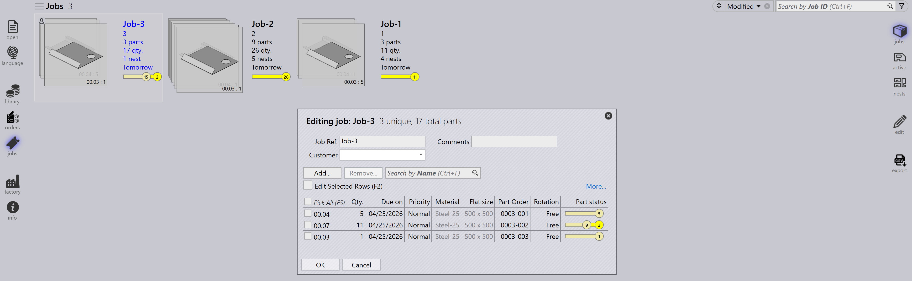

Job visning
Dette afsnit forklarer de forskellige visninger, der er tilgængelige i Job- visningen, herunder Jobs, Parts, Nests, Edit, Simulate og Export.
Jobs
Valg af jobs valgmuligheden viser en liste over alle jobs, der aktuelt er konfigureret i softwaren. De kan dobbeltklikke på et job for at se dets detaljer eller højreklikke for at få adgang til yderligere muligheder.
-
Jobs vises i flisevisning, hvor hvert job vises med grundlæggende egenskaber som Job-ID, Job-reference, kundenavn, samlede dele, leveringsdato, jobstatuslinje osv.
-
Hver jobflise viser også delbilleder i et stablet kortformat. De kan rulle gennem alle dele i et job ved hjælp af musehjulet.

Job detaljer
-
Dobbeltklik på en flise eller tryk på Enter-tasten efter at have valgt en flise skifter visningen til Detaljetilstand.
-
Detaljsiden viser dellisten sammen med de nestede plader (layouts), hvis der er nogen.
-
Brug Op/Ned piletasterne til at skifte mellem jobs på detaljsiden.
-
Rul musehjulet over delstakken fremhæver delen i både dellisten og layoutsene.
-
Valg af et layout fremhæver layoutet og alle dele nestet på det i dellisten. Fremhævningerne slukkes automatisk efter et minut.

-
Indlejringsresumé:
-
Dele: Viser det samlede antal ordreelementer og den samlede mængde i jobbet.
-
plader: Viser det samlede antal nestede plader sammen med den samlede plademængde.
-
-
Arbejdstrin:
-
Bukning: Viser den tildelte maskine og dens ordremængde, der skal behandles.
-
Skæring: Viser den tildelte maskine og dens ordremængde, der skal behandles.
-
Prioritet
-
Klik først på ikonet Jobs i venstre side af skærmen, vælg det job, De ønsker at redigere, og klik derefter på edit i højre side af skærmen (sørg for, at valgmuligheden Jobs er valgt).
-
Alternativt kan De højreklikke på det valgte job og klikke på ikonet Tjek dokumentet ud til redigering.
-
Når De klikker på edit, vises vinduet edit job. I dette vindue kan De indstille eller ændre prioriteten for jobbet.

-
Baseret på jobdelprioriteten er jobreferencen i jobflisen farveskygget tilsvarende.
-
Jobdele sorteres først efter prioritet og derefter efter leveringsdato. De er også farveskygget i henhold til deres prioritet.
-
Ved nesting betragtes Urgent-dele først, efterfulgt af High, derefter Normal, og endelig placeres Low-prioritetsdele i det resterende rum på nestpladerne.
-
Nestplader sorteres og farveskygges også i henhold til prioritet.
| Job prioritet | Farvebeskrivelse |
|---|---|
|
Urgent |
|
Normal |
|
High |
|
Low |


Status
-
Jobstatuslinjen bruger farvekoder til at angive jobbets fremskridt eller tilstand baseret på den behandlede eller resterende mængde.
-
Delene i jobbet og nestpladerne fremhæves også med matchende farver for at afspejle deres individuelle status inden for det overordnede JOB.
-
Farvekodning forbedrer sporingen og sikrer, at operatørerne nemt kan se produktionsstatus med et hurtigt blik.


| Job Status | Beskrivelse |
|---|---|
|
Ikke klar |
|
Indlejring |
|
Klar |
|
Bend Planned |
|
Plade mangler |
|
Bukningskø |
|
Skærekø |
|
Udført |


Parts
Visningen Active Parts viser alle dele, der aktuelt er under behandling i aktive jobs.
Hver del repræsenteres som en flise, der viser vigtige detaljer såsom delnavn, dimensioner, materiale, tykkelse, mængde og leveringsdato. En visuel forhåndsvisning af delen vises også.
Denne visning hjælper brugerne med at overvåge behandlingsstatus for individuelle dele og spore deres fremskridt på tværs af igangværende jobs.

Nests
Visningen Active Nests viser alle nests, der aktuelt er under behandling i aktive jobs.
Hvert nest repræsenteres med relevante detaljer såsom antal dele og behandlingsstatus. Et visuelt layout af de nestede dele vises også.
Denne visning hjælper brugerne med at overvåge nestingfremskridt og spore, hvordan dele arrangeres og behandles på plader.

Edit
Valgmuligheden Edit giver Dem mulighed for at ændre det valgte element.
Baseret på den aktuelle visning åbnes den valgte forekomst til redigering:
-
I Jobs-visningen åbnes det valgte job til redigering.
-
I Active Parts-visningen åbnes den valgte del til redigering.
-
I Active Nests-visningen åbnes det valgte nest til redigering.

Export csv
Valgmuligheden Export giver Dem mulighed for at vælge jobinformation og eksportere den til en CSV-fil.
-
Klik på ikonet jobs.
-
Klik på valgmuligheden export i højre side af skærmen.

-
En dialogboks vises med tilgængelige felter:

-
Vælg afkrydsningsfelterne for de felter, De ønsker at eksportere.
-
Brug valgmuligheden Group By, hvis De ønsker at gruppere dataene efter et valgt felt.
-
Klik på Export for at generere CSV-filen.
Yderligere information
Der er også tre yderligere ikoner i højre side af skærmen, som er simulér, Goto og tilbage.
-
Simulate åbner det valgte element for en mere detaljeret visning.
-
Goto skifter fokus og viser den del eller det nest, der er valgt.
-
Back går et niveau tilbage fra, hvor De aktuelt er, for eksempel at klikke på tilbage mens De er i simulering, vil tage Dem tilbage til hovedjobbet, og fra et job vil det tage Dem tilbage til hovedjobvisningen.